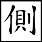
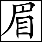

苦盡甘來遞轉，正强忽弱誰明？惺惺自古惜惺惺，世運文章操勁。無縫機關難見，多才筆墨偏精。有情情處特無情，何是人人不醒？
苦盡甘來遞轉，正强忽弱誰明？惺惺自古惜惺惺，世運文章操勁。無縫機關難見，多才筆墨偏精。有情情處特無情，何是人人不醒？
題曰：
十二花容色最新，不知誰是惜花人？
相逢若問名何氏？家住江南姓本秦。
話說周瑞家的送了劉姥姥去後，便上來回王夫人話。 
周瑞家的不敢驚動，遂進裡間來。  總用雙歧岔路之筆，令人估料不到之文。只見薛寶釵自入梨香院，至此方寫。穿著家常衣服，好！寫一人換一副筆墨，另出一花樣。 「熱毒」二字畫出富家夫婦，圖一時遺害於子女，而可不謹慎！幸而我先天結壯，還不相干。渾厚故也，假使顰、鳳輩，不知又何如治之。若吃凡藥，是不中用的。他就說了一個海上方，又給了一包末藥作引，異香異氣的。不知是那裡弄來的。他說發了時吃一丸就好。倒也奇怪，這倒效驗些。」卿不知從那裡弄來，余則深知。是從放春山採來，以灌愁海水和成，煩廣寒玉兔搗碎，在太虛幻境空靈殿上炮製配合者也。
總用雙歧岔路之筆，令人估料不到之文。只見薛寶釵自入梨香院，至此方寫。穿著家常衣服，好！寫一人換一副筆墨，另出一花樣。 「熱毒」二字畫出富家夫婦，圖一時遺害於子女，而可不謹慎！幸而我先天結壯，還不相干。渾厚故也，假使顰、鳳輩，不知又何如治之。若吃凡藥，是不中用的。他就說了一個海上方，又給了一包末藥作引，異香異氣的。不知是那裡弄來的。他說發了時吃一丸就好。倒也奇怪，這倒效驗些。」卿不知從那裡弄來，余則深知。是從放春山採來，以灌愁海水和成，煩廣寒玉兔搗碎，在太虛幻境空靈殿上炮製配合者也。
周瑞家的因問道：「不知是個什麽海上方兒？姑娘說了，我們也記著，說與人知道，倘遇見這樣的病，也是行好的事。」寶釵見問，乃笑道：「不問這方兒還好，若問起這方兒，真真把人瑣碎壞了。東西藥料一概都有，現易得的，只難得『可巧』二字：要春天開的白牡丹花蕊十二両，凡用「十二」字樣，皆照應十二釵。 週歲十二月之象。夏天開的白荷花蕊十二両，秋天開的白芙蓉花蕊十二両，冬天開的白梅花蕊十二両。將這四樣花蕊，於次年春分這日曬乾，和在末藥一處，一齊研好。又要雨水這日的雨水十二錢，……」周瑞家的忙道：「噯喲！這樣說來，這就得一二年的工夫。倘或雨水這日不下雨水，又怎處呢？」寶釵笑道：「所以了，那裡有這樣可巧的雨，便沒雨也只好再等罷了。白露這日的露水十二錢，霜降這日的霜十二錢，小雪這日的雪十二錢。把這四樣水調勻，和了丸藥，再加蜂蜜十二錢，白糖十二錢，丸了龍眼大的丸子，盛在舊磁罐內，埋在花根底下。若發了病時，拿出來吃一丸，用十二分黃柏歷著炎凉，知著甘苦，雖離別亦自能安，故名曰冷香丸。又以謂香可冷得，天下一切無不可冷者。煎湯送下。」末用黃柏更妙。可知「甘苦」二字，不獨十二釵，世皆同有者。
周瑞家的聽了，笑道：「阿彌陀佛，真坑死了人！〔一〕等十年未必都這樣巧呢。」寶釵道：「竟好，自他說了去後，一二年間可巧都得了，好容易配成一料。如今從南帶至北，現就埋在梨花樹下。」「梨香」二字有著落，並未白白虛設。周瑞家的又道：「這藥可有名字沒有呢？」寶釵道：「有。一字句。這也是癩和尚說下的，叫作『冷香丸』。」新雅，奇甚。周瑞家的聽了點頭兒，因又說：「這病發了時到底覺怎樣？」寶釵道：「也不覺什麽，只不過喘嗽些，吃一丸也就罷了。」以花為藥，可是吃煙火人想得出者？諸公且不必問其事之有無，只據此新奇妙文悅我等心目，便當浮一大白。
周瑞家的還欲說話時，忽聽王夫人問：了結得齊整。「是誰在裡頭？」周瑞家的忙出去答應了，趁便回了劉姥姥之事。略待半刻，見王夫人無話，方欲退出，行文原只在一二字，便有許多省力處。不得此竅者，便在窗下百般扭捏。薛姨媽忽又笑道：「忽」字「又」字與「方欲」二字對射。「你且站住。我有一宗東西，你帶了去罷。」說著便叫香菱。二字仍從「蓮」上起來。蓋「英蓮」者，「應憐」也，「香菱」者亦「相憐」之意。此是改名之「英蓮」也。簾櫳響處，方纔和金釧兒頑的那個小女孩子進來了，問：「奶奶叫我作什麽？」這是英蓮天生成的口氣，妙甚！薛姨媽道：「把那匣子裡的花兒拿來。」香菱答應了，向那邊捧了個小錦匣來。薛姨媽乃道：「這是宮裡頭作的新鮮樣法堆紗花十二枝。昨兒我想起來，白放著可惜舊了，何不給他們姊妹們戴去。昨兒要送去，偏又忘了。你今兒來的巧，就帶了去罷。你家的三位姑娘，每人兩枝，下剩六枝，送林姑娘兩枝，那四枝給了鳳哥兒罷。」妙文！今古小說中可有如此口吻者？王夫人道：「留著給寶丫頭戴罷了，又想著他們。」薛姨媽道：「姨媽不知道，寶丫頭古怪「古怪」二字，正是寶卿身份。呢，他從來不愛這些花兒粉兒的。」可知周瑞一回，正為寶、菱二人所有，正《石頭記》得力處也。
說著，周瑞家的拿了匣子走出房門，見金釧兒仍在那裡曬日陽。周瑞家的因問他道：「那香菱小丫頭子，可就是時常說臨上京時買的、為他打人命官司的那個小丫頭子？」點醒從來。金釧道：「可不就是。」出明英蓮。正說著，只見香菱笑嘻嘻的走來。周瑞家的便拉了他的手，細細的看了一回，因向金釧兒笑道：「倒好個模樣兒，竟有些像咱們東府裡蓉大奶奶的品格。」一擊兩鳴法，二人之美，並可知矣。再忽然想到秦可卿，何玄幻之極。假使說像榮府中所有之人，則死板之至，故遠遠以可卿之貌為譬，似極扯淡，然却是天下必有之情事。金釧兒笑道：「我也是這麽說呢。」周瑞家的又問香菱：「你幾歲投身到這裡？」又問：「你父母今在何處？今年十幾歲了？本處是那裡人？」香菱聽問，搖頭說：「不記得了。」傷痛之極，亦必如此收住方妙。不然，則又將作出香菱思鄉一段文字矣。周瑞家的和金釧兒聽了，倒反為他嘆息傷感一回。西施心痛之態，其時自己也還耐得，倒是旁人替伊為多少思慮，不禁無窮痛楚之香菱，其是乎，否乎？
一時周瑞家的携花至王夫人正房後來。原來近日賈母說孫女們太多了，一處擠著倒不便，只留寶玉、黛玉二人在這邊解悶，却將迎、探、惜三人移到王夫人這邊房後三間小抱厦內居住，令李紈陪伴照管。不作一筆安逸之(板)[筆]矣。如今周瑞家的故順路先往這裡來，只見幾個小丫頭子都在抱厦內聽呼喚默坐。迎春的丫頭司棋與探春的丫鬟待書〔二〕妙名。賈家四釵之鬟，暗以琴、棋、書、畫四字列名，省力之甚，醒目之甚，却是俗中不俗處。二人正掀簾出來，手裡都捧著茶盤茶鍾，周瑞家的便知他姊妹在一處坐著，遂進入內房，只見迎春、探春二人正在窗下圍棋。周瑞家的將花送上，說明原故。他二人忙住了棋，都欠身道謝，命丫鬟們收了。
周瑞家的答應了，因說：「四姑娘不在房裡？只怕在老太太那邊呢。」丫鬟們道：「在這屋裡不是？」用畫家三五聚散法寫來，方不死板。周瑞家的聽了，便往這邊屋內來。只見惜春正同水月庵即饅頭庵。的小姑子智能兒，兩個一處頑笑，總是得空便入。百忙中又帶出王夫人喜施捨等事，可知一支筆作千百支用。◇又伏後文。 閒閒一筆，却將後半部綫索提動。見周瑞家的進來，惜春便問他何事。周瑞家的便將花匣打開，說明原故。惜春笑道：「我這裡正和智能兒說，我明兒也剃了頭同他作姑子去呢，可巧又送了花兒來。若剃了頭，把這花可戴在那裡？」觸景生情，透漏身分。說著，大家取笑一回，惜春命丫鬟入畫來收了。曰司棋，曰待書，曰入畫，後文補抱琴。◇琴、棋、書、畫四字最俗，上添一虛字則覺新雅。
周瑞家的因問智能兒：「你是什麽時候來的？你師傅那禿歪剌往那裡去了？」智能兒道：「我們一早就來了，我師傅見過太太，就往于老爺府裡去了，叫我在這裡等他呢。」又虛貼一個「于老爺」，可知所尚僧尼者，悉愚人也。周瑞家的又道：「十五的月例香供銀子可得了沒有？」智能兒搖頭兒說：「不知道。」妙！年輕未任事也。一應騙佈施、哄齋供諸惡，皆是老禿賊設局。寫一種人，一種人活像。惜春聽了，便問周瑞家的：「如今各廟月例銀子是誰管著？」周瑞家的道：「是余信明點「愚性」二字。管著。」寫家奴每相妒毒，人前有意傾陷。惜春聽了笑道：「這就是了。他師傅一來了，余信家的就趕上來，和他師傅咕唧了半日，想是就為這事了。」一人不落，一事不忽，伏下多少後文，豈真為送花哉！
那周瑞家的又和智能兒嘮叨了一回，便往鳳姐處來。穿夾道從李紈後窗下過，細極！李紈雖無花，豈可失而不寫者？故用此順筆便墨，間三帶四，使觀者不忽。越西花墻，出西角門，進入鳳姐院中。走至堂屋，只見小丫頭豐兒坐在鳳姐房門檻上，見周瑞家的來了，連忙二字著緊。擺手兒，叫他往東屋裡去。周瑞家的會意，慌的躡手躡脚的往東邊房裡來，只見奶子正拍著大姐兒睡覺呢。總不重犯，寫一次有一次的新樣文法。周瑞家的悄問奶子道：「奶奶睡中覺呢？也該請醒了。」奶子搖頭兒。有神理。正問著，只聽那邊一陣笑聲，却有賈璉的聲音。接著房門響處，平兒拿著大銅盆出來，叫豐兒舀水進去。妙文奇想！阿鳳之為人，豈有不著意於「風月」二字之理哉？若直以明筆寫之，不但唐突阿鳳聲價，亦且無妙文可賞。若不寫之，又萬萬不可。故只用「柳藏鸚鵡語方知」之法，略一皴染，不獨文字有隱微，亦且不至污瀆阿鳳之英風俊骨。所謂此書無一不妙。 余素所藏仇十洲《幽窗聽鶯暗春圖》，其心思筆墨，已是無雙，今見此阿鳳一傳，則覺畫工太板。平兒便進這邊來，一見了周瑞家的便問：「你老人家又跑了來作什麽？」周瑞家的忙起身，拿匣子與他，說送花一事。平兒聽了，便打開匣子，拿出四枝，轉身去了。半刻工夫，手裡又拿出兩枝來，攢花簇錦文字，故使人耳目眩亂。先叫彩明來，吩咐他「送到那邊府裡，給小蓉大奶奶戴去。」忙中更忙，又曰「密處不容針」，此等處是也。次後方命周瑞家的回去道謝。
周瑞家的這纔往賈母這邊來。穿過了穿堂，頂頭忽見他女兒打扮著纔從他婆家來。周瑞家的忙問：「你這會子跑來作什麽？」他女兒笑道：「媽一向身上好？我在家裡等了這半日，媽竟不出去，什麽事情這樣忙的不回家？我等煩了，自己先到了老太太跟前請了安了，這會子請太太安去。媽還有什麽不了的差事？手裡是什麽東西？」周瑞家的笑道：「噯！今兒偏偏的來了個劉姥姥，我自己多事，為他跑了半日，這會子又被姨太太看見了，送這幾枝花兒與姑娘奶奶們。這會子還沒送清白呢。你這會子跑來，一定有什麽事情的。」他女兒笑道：「你老人家倒會猜。實對你老人家說，你女婿前兒因多吃了兩杯酒，和人紛爭起來，不知怎的被人放了一把邪火，說他來歷不明，告到衙門裡，要遞解還鄉。所以我來和你老人家商議商議，這個情分，求那一個可了事？」周瑞家的聽了道：「我就知道的。這有什麽大不了的！你且家去等我，我送林姑娘的花兒去了就回家來。此時太太、二奶奶都不得閒兒，你回去等我。這沒有什麽忙的。」他女兒聽如此說，便回去了。還說：「媽，你好歹快來！」周瑞家的道：「是了。小人家沒經過什麽事情，就急的你這樣子。」說著。便到黛玉房中去了。又生出一小段來，是榮、寧中常事，亦是阿鳳正文，若不如此穿插，直用一送花到底，亦太死板，不是《石頭記》筆墨矣。
誰知此時黛玉不在自己房中，却在寶玉房中大家解九連環作戲。妙極！又一花樣。此時二玉已隔房矣。周瑞家的進來笑道：「林姑娘，姨太太著我送花來與姑娘戴。」寶玉聽說，便先說：「什麽花？拿來給我。」一面早伸手接過來了。瞧他夾寫寶玉。開匣看時，原來是兩枝宮製堆紗新巧的假花。此處方一細寫花形。黛玉只就寶玉手中看了一看，妙！看他寫黛玉。便問道：「還是單送我一個人的，還是別的姑娘們都有？」在黛玉心中，不知有何丘壑。周瑞家的道：「各位都有了，這兩枝是姑娘的了。」黛玉再看了一看，「再看一看」，傳神。冷笑道：「我就知道，別人不挑剩下的也不給我。替我道謝罷！」吾實不知黛卿胸中有何丘壑。周瑞家的聽了，一聲兒不言語。余(問)[閱]送花一回，薛姨媽云「寶丫頭不喜這些花兒粉兒的」，則謂是寶釵正傳；又至阿鳳(惜)[嬉]春〔三〕一段，則又知是阿鳳正傳；今又到顰兒一段，却又將阿顰之天性從骨中一寫，方知亦係顰兒正傳。小說中一筆作兩三筆者有之，一事啓兩事者有之，未有如此恒河沙數之筆也。寶玉便問道：「周姐姐，你作什麽到那邊去了。」周瑞家的因說：「太太在那裡，因回話去了，姨太太就順便叫我帶來了。」寶玉道：「寶姐姐在家作什麽呢？怎麽這幾日也不過來？」周瑞家的道：「身上不大好呢。」寶玉聽了，便和丫頭們說：「誰去瞧瞧？就說我和林姑娘「和林姑娘」四字著眼。打發來問姨娘、姐姐安，問姐姐是什麽病，吃什麽藥。論理我該親自來的，就說纔從學裡來的，也著了些凉，異日再親來。」余觀「纔從學裡來」幾句，忽追思昔日情景，可嘆！想紈絝小兒，自開口云「學裡」，亦如市俗人開口便云「有些小事」，然何嘗真有事哉！此掩飾推託之詞耳。寶玉若不云「從學房裡來凉著」，然則便云「因憨頑時凉著」者哉？寫來一笑，繼之一嘆。說著，茜雪便答應去了。周瑞家的自去，無話。
原來這周瑞的女婿，便是雨村的好友冷子興，著眼。近因賣古董和人打官司，故遣女人來討情分。周瑞家的仗著主子的勢利，把這些事也不放在心上，晚間只求求鳳姐兒便完了。
至掌燈時分，鳳姐已卸了妝，來見王夫人回話：「今兒甄家又提甄家。送了來的東西，我已收了。不必細說方妙。咱們送他的，趁著他家有年下進鮮的船回去，一併都交給他們帶去了。」王夫人點頭。鳳姐又道：「臨安伯老太太千秋的禮已經打點了，太太派誰送去？」阿鳳一生(尖)[奸]處。王夫人道：「你瞧誰閒著，不管打發那兩個女人去就完了，又來當什麽正經事問我。」虛描二事，真真千頭萬緒，紙上雖一回兩回中或有不能寫到阿鳳之事，然亦有阿鳳在彼處手忙心忙矣，觀此回可知。 各自各自心計，在問答之間渺茫欲露。鳳姐又笑道：「今兒珍大嫂子來，請我明兒過去逛逛，明兒倒沒有什麽事。」王夫人道：「有事沒事都害不著什麽。每常他來請，有我們，你自然不便意，他既不請我們，單請你，可知是他誠心叫你散淡散淡，別辜負了他的心，便是有事，也該過去纔是。」用人力者當有此段心想。鳳姐答應了。當下李紈、迎春等姐妹們亦曾定省畢，各自歸房無話。
次日，鳳姐兒梳洗了，先回王夫人畢，方來辭賈母。寶玉聽了，也要逛去。鳳姐只得答應著，立等換了衣服，姐兒兩個坐了車，一時進入寧府。早有賈珍之妻尤氏與賈蓉之妻秦氏，婆媳兩個引了多少姬妾丫鬟媳婦等接出儀門。那尤氏一見了鳳姐，必先笑嘲一陣，一手携了寶玉，入上房來歸坐。秦氏獻茶畢，鳳姐因說：「你們請我來作什麽？有什麽東西來孝敬就獻上來，我還有事呢。」口頭心頭，惟恐人不知。尤氏秦氏未及答話，地下幾個姬妾先就笑說：「二奶奶今兒不來就罷，既來了，就依不得二奶奶了。」非把世態熟於胸中者，不能有如此妙文。正說著，只見賈蓉進來請安。寶玉因問：「大哥哥今日不在家？」尤氏道：「出城請老爺安去了。」又道：「可是你怪悶的，也坐在這裡作什麽？何不去逛逛？」
秦氏笑道：「今日巧，上回寶叔立刻要見見我兄弟，他今兒也在這裡，欲出鯨卿，却先小妯娌閒閒一聚，隨筆帶出，不見一絲造作。想在書房裡，寶叔何不去瞧一瞧？」寶玉聽了，即便下炕要走。尤氏、鳳姐都忙說：「好生著，忙什麽？」一面便吩咐人，「好生小心跟著，別委屈著他，倒比不得跟了老太太來，就罷了。」「委屈」二字極不通，却是至情，寫愚婦至矣！鳳姐兒道：「既這麽著，何不請進這秦小爺來，我也瞧瞧。難道我就見不得他不成？」尤氏笑道：「罷，罷！可以不必見他，比不得咱們家的孩子們，胡打海摔的慣了。卿家「胡打海摔」，不知誰家方珍憐珠惜？此極相矛盾却極入情，蓋大家婦人口吻如此。 偏會反襯，方顯尊重。人家的孩子都是斯斯文文慣了的，乍見了你這破落戶，還被人笑話死了呢。」鳳姐笑道：「普天下的人，我不笑話就罷，自負得起。竟叫這小孩子笑話我不成？」賈蓉笑道：「不是這話，他生的靦腆，沒見過大陣仗兒，嬸子見了，沒的生氣。」鳳姐啐道：「他是哪咤，我也要見一見！別放你娘的屁了。再不帶去，看給你一頓好嘴巴子。」此等處寫阿鳳之放縱，是為後回伏綫。賈蓉笑嘻嘻的說：「我不敢强，就帶他來。」
說著，果然出去帶進一個小後生來，較寶玉略瘦巧些，清眉秀目，粉面朱唇，身材俊俏，舉止風流，似在寶玉之上，只是怯怯羞羞，有女兒之態，靦腆含糊的向鳳姐作揖問好。鳳姐喜的先推寶玉，笑道：「比下去了！」不知從何處想來。便探身一把携了這孩子的手，就命他身旁坐下，慢慢問他年紀、讀書等事，分明寫寶玉，却先偏寫阿鳳。方知他學名喚秦鍾。設云「情種」。古詩云：「未嫁先名玉，來時本姓秦。」二語便是此書大綱目、大比託、大諷刺處。早有鳳姐的丫鬟媳婦們見鳳姐初會秦鍾，並未備得表禮來，遂忙過那邊去告訴平兒。平兒素知鳳姐與秦氏厚密，雖是小後生家，亦不可太儉，遂自作了主意，拿了一匹尺頭，兩個「狀元及第」的小金錁子，交付與來人送過去。鳳姐猶笑說「太簡薄」等語。秦氏等謝畢。一時吃過飯，尤氏、鳳姐、秦氏等抹骨牌，不在話下。一人不落，又帶出「强將手下無弱兵」。
寶玉、秦鍾二人隨便起坐說話。淡淡寫來。那寶玉只一見秦鍾人品，心中便有所失，痴了半日，自己心中又起了呆意，乃自思道：「天下竟有這等人物！如今看來，我竟成了泥猪癩狗了。可恨我為什麽生在這侯門公府之家，若也生在寒儒薄宦之家，早得與他交結，也不枉生了一世。我雖如此比他尊貴，這一句不是寶玉本意中語，却是古今歷來膏粱紈絝之意。可知綾錦紗羅，也不過裹了我這根死木；美酒羊羔，也只不過填了我這糞窟泥溝。『富貴』二字，不料遭我塗毒了！」一段痴情，翻「賢賢易色」一句筋斗，使此後朋友中無復再敢假談道義，虛論情常。 此是作者一大發泄處。秦鍾自見了寶玉形容出衆，舉止不浮，「不浮」二字妙，秦卿目中所取正在此。更兼金冠綉服，驕婢侈童，這二句是貶，不是獎。此八字遮飾過多少魑魅紈綺，秦卿目中所鄙者。秦鍾心中亦自思道：「果然這寶玉怨不得人人溺愛他。可恨我偏生於清寒之家，不能與他耳鬢交結，可知『貧富』二字限人，亦世間之大不快事。」「貧富」二字中，失却多少英雄朋友！ 總是作者大發泄處，借此以伸多少不樂。二人一樣的胡思亂想。作者又欲瞞過衆人。忽又二字寫小兒得神。有寶玉問他讀什麽書。寶玉問讀書，亦想不到之大奇事。秦鍾見問，便因實而答。四字普天下朋友來看。二人你言我語，十來句後，越覺親密起來。
一時擺上茶果吃茶，寶玉便說：「我兩個又不吃酒，把果子擺在裡間小炕上，我們那裡坐去，省得鬧你們。」眼見得二人一身一體矣。於是二人進裡間來吃茶。秦氏一面張羅與鳳姐擺酒果，一面忙進來囑寶玉道：「寶叔，你侄兒年小，倘或言語不防頭，你千萬看著我，不要理他。他雖靦腆，却性子左强，不大隨和些是有的。」實寫秦鍾，雙映寶玉。 伏後文。寶玉笑道：「你去罷，我知道了。」秦氏又囑了他兄弟一回，方去陪鳳姐。
一時鳳姐尤氏又打發人來問寶玉：「要吃什麽，外面有，只管要去。」寶玉只答應著，也無心在飲食，只問秦鍾近日家務等事。寶玉問讀書已奇，今又問家務，豈不更奇？秦鍾因說：「業師於去年病故，家父又年紀老邁，賤疾在身，公務繁冗，因此尚未議及再延師一事，目下不過在家溫習舊課而已。再讀書一事，也必須有一二知己眼。 伏綫。為伴，時常大家討論，纔能進益。」真是可兒之弟。寶玉不待說完，便答道：「正是呢，我們家却有個家塾，合族中有不能延師的，便可入塾讀書，子弟們中亦有親戚在內，可以附讀。我因上年業師回家去了，也現荒廢著。家父之意，亦欲暫送我去，且溫習著舊書，待明年業師上來，再各自在家亦可。家祖母因說：一則家學裡子弟太多，生恐大家淘氣，反不好，二則也因我病了幾天，遂暫且耽擱著。如此說來，尊翁如今也為此事懸心。今日回去何不禀明，就在我們這敝塾中來，我亦相伴，彼此有益，豈不是好事？」秦鍾笑道：「家父前日在家提及延師一事，也曾提起這裡的義學倒好，原要來和這裡的親翁商議引薦。因這裡事忙，不便為這點小事來聒絮的。寶叔果然度小侄或可磨墨滌硯，何不速速作成，真是可卿之弟。又彼此不致荒廢，又可以常相談聚，又可以慰父母之心，又可以得朋友之樂，豈不是美事？」痛快淋漓，以至於此。寶玉笑道：「放心，放心。咱們回來先告訴你姐夫、姐姐和璉二嫂子。你今日回家就禀明令尊，我回去再回明家祖母，再無不速成之理的。」二人計議一定。那天氣已是掌燈時候，出來又看他們頑了一回牌。算賬時，却又是秦氏、尤氏二人輸了戲酒的東道，自然是二人輸。言定後日吃這東道，一面又說了回話。
晚飯畢，因天黑了，尤氏因說：「先派兩個小子送了這秦相公去。」媳婦們傳出去半日，秦鍾告辭起身。尤氏問：「派了誰送去？」媳婦們回說：「外頭派了焦大，誰知焦大醉了，又駡呢。」可見駡非一次矣。 惡惡而不能去，善善而不能用，所以流毒無窮，可勝嘆哉。尤氏、秦氏都說道：「偏又派他作什麽！放著這些小子們，那一個派不得？偏要惹他去。」便奇。鳳姐道：「我成日家說你太軟弱了，縱的家裡人這樣，還了得呢！」尤氏嘆道：「你難道不知這焦大的？連太爺都不理他的，你珍哥哥也不理他。只因他從小兒跟著太爺們出過三四回兵，從死人堆裡把太爺背了出來，得了命，自己挨著餓，却偷了東西來給主子吃。兩日沒得水，得了半碗水，給主子吃，他自喝馬溺。不過仗著這些功勞情分，有祖宗時都另眼相待，如今誰肯難為他去？他自己又老了，又不顧體面，一味的噇酒，一吃醉了，無人不駡。我常說給管事的，不要派他事，全當一個死的就完了。今兒又派了他！」有此功勞，實不可輕易摧折，亦當處之以道，厚其贍養，尊其等次。送人回家，原非酬功之事。所謂漢之功臣不得保其首領者，我知之矣。鳳姐道：「我何曾不知這焦大。倒是你們沒主意，有這樣，何不打發他遠遠的莊子上去就完了。」這是為後協理寧國[府]伏綫。說著，因問：「我們的車可齊備了？」地下衆人都應：「伺候齊了。」
鳳姐亦起身告辭，和寶玉携手同行。尤氏等送至大廳，只見燈燭輝煌，衆小厮都在丹墀侍立。那焦大又恃賈珍不在家——即在家亦不好怎樣——更可以恣意的灑落灑落。因趁著酒興，先駡大總管賴二，記清，榮府中則是賴大，又故意綜錯的妙。說他不公道，欺軟怕硬，「有了好差事就派別人，像這樣黑更半夜送人的事就派我。沒良心的忘八羔子！瞎充管家！你也不想想，焦大太爺蹺起一隻脚，比你的頭還高呢。二十年頭裡的焦大太爺眼裡有誰？別說你們這把子的雜種忘八羔子們！」
正駡的興頭上，賈蓉送鳳姐的車出去，衆人喝他不聽，賈蓉忍不得，便駡了他兩句，使人「捆起來！等明日酒醒了，問他還尋死不尋死了！」可憐！天下每每如此。那焦大那裡把賈蓉放在眼裡，反大叫起來，趕著賈蓉叫：「蓉哥兒，你別在焦大跟前使主子性兒。別說你這樣兒的，就是你爹、你爺爺，也不敢和焦大挺腰子呢！不是焦大一個人，你們做官兒，享榮華，受富貴？你祖宗九死一生掙下這個家業，到如今不報我的恩，反和我充起主子來了。忽接此焦大一段，真可驚心駭目，一字化一泪，一泪化一血珠。 不和我說別的還可，若再說別的，咱們紅刀子進去白刀子出來〔四〕！」是醉人口中文法。◇一段借醉奴口角閒閒補出寧榮往事近故，特為天下世家一(笑)[哭]。鳳姐在車上說與賈蓉：「以後還不早打發了這沒王法的東西！留在這裡豈不是禍害？倘或親友知道了，豈不笑話咱們這樣的人家，連個王法規矩都沒有。」賈蓉答應「是」。
衆小厮見他太撒野不堪了，只得上來幾個，揪翻捆倒，拖往馬圈裡去。焦大益發連賈珍都說出來，亂嚷亂叫：「我要往祠堂裡哭太爺去。那裡承望到如今生下這些畜牲來！每日家偷狗戲鶏，爬灰的爬灰，養小叔子的養小叔子，我什麽不知道？咱們『胳膊折了往袖子裡藏』！」「不如意事常八九，可與人言無二三。」以二句批是段，聊慰石兄。 放筆痛駡一回，富貴之家，每罹此禍。衆小厮聽他說出這些沒天日的話來，唬的魂飛魄散，也不顧別的了，便把他捆起來，用土和馬糞滿滿的填了他一嘴。
鳳姐和賈蓉等也遙遙的聞得，便都裝作聽不見。寶玉在車上見這般醉鬧，倒也有趣，因問鳳姐兒道：「姐姐，你聽他說『爬灰的爬灰』，什麽是『爬灰』？」暗伏後來史湘雲之問。鳳姐聽了，連忙立眉嗔目斷喝道：「少胡說！那是醉漢嘴裡混唚。你是什麽樣的人，不說不聽見，還倒細問！等我回去回了太太，仔細捶你不捶你！」熙鳳能事。唬的寶玉連忙央告：「好姐姐，我再不敢說這話了。」鳳姐亦忙回色哄道：「好兄弟，這纔是。等回去咱們回了老太太，打發人往家學裡說明白了，請了秦鍾家學裡唸書去要緊。」說著，自回榮府而來。要知端的，且聽下回分解。正是：
不因俊俏難為友，正為風流始讀書。原來不讀書即蠢物矣。
總評：焦大之醉，伏可卿之病至死。周婦之談，勢利之害真兇。作者具菩提心，於世人說法。
〔一〕原作「真巧死了人」，己、庚本作「真坑死人的事兒」，「巧」當係「坑」字之訛，據改。按此處口語以「坑死人」為傳神，且下一句又有一個「巧」字，也以不重複為佳。
〔二〕「待書」：己、戚、列、楊本同，庚、蒙、辰、舒本則作「侍書」（庚本的「侍」是「待」字描改）。或引《魏書·術藝》：「太和中，兗州人沈法會能隸書。世宗在東宮，敕法會侍書。」認為「侍書」有出典，應以「侍書」為是。但這裡四大丫鬟的名字「抱琴」和「司棋」、「待書」和「入畫」是兩兩成對的，而「侍書」則不與「入畫」成對。再則，此處諸本有批語稱這些名字為「妙名」、「俗中不俗」、「新雅」，可見應以作者自擬的「待書」為是，而不當取用典的「侍書」。
〔三〕此批列舉三「段」為寶釵、鳳姐和黛玉三人的「正傳」，釵、黛的都寫明理由，鳳姐的未寫理由且作「阿鳳惜春一段」。鳳姐的「正傳」不當拉扯上惜春，此處「一段」當指鳳姐和賈璉白日風月嬉戲而言，酌改「惜」為「嬉」字。
〔四〕原作「白刀子進去紅刀子出來」，這是正常人文法，不是「醉人口中文法」，據己、庚等本改。
本章完!